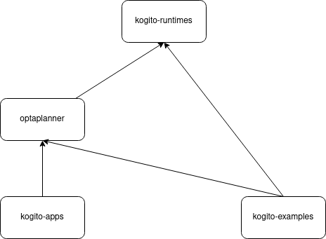
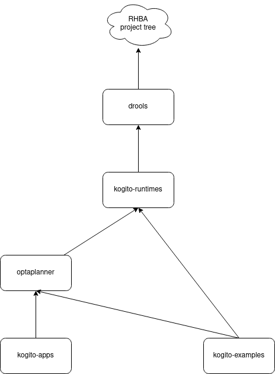
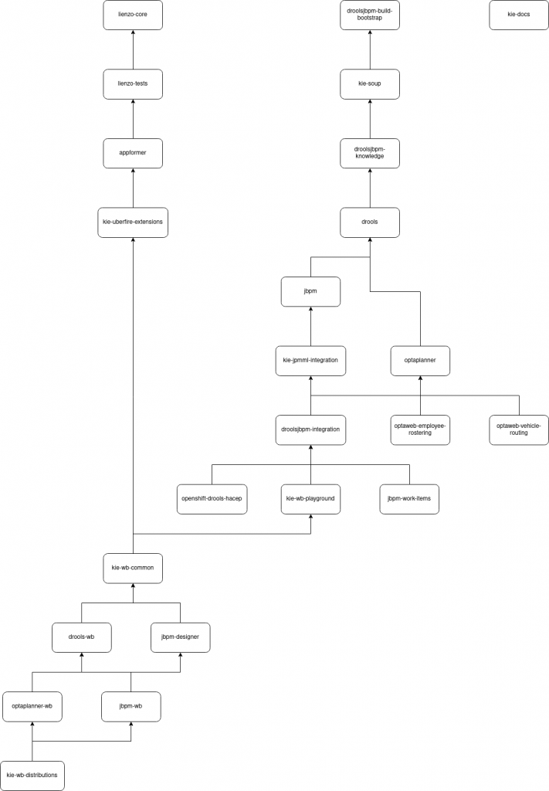

Cross-repo Pull Requests? build-chain tool to the rescue!
Do you often need to change many repositories at once to implement a new feature? Do you need to create multiple Pull Requests in many repositories and need to build every repository on the correct branch to test it? Then you have the same problem we had several months ago at the KIE organization here at Red Hat. Now thanks to the build-chain GitHub Action we are already able to easily set up our GitHub Actions Workflows to build cross-repo Pull Requests for many different repositories. In this blog post, we’ll cover the problem surrounding cross-repo Pull Requests along with the steps to configure your first build-chain GitHub Actions Workflow. We’ll also present real-world examples and some additional cool things you can do with build-chain! Let’s get started.
The cross-repo Pull Requests problem
Let’s suppose we have this repository dependency tree:
This is already a complex-enough repository dependency tree and some interesting scenarios can happen during development. But before we break down these scenarios and explain what we should be doing on each of them to verify that a PR is good and does not break anything, let’s define some important concepts.
First of all, if you’re building a repository that depends on the development versions of other repositories, you should be building these repositories. These dependency-repositories are called UPSTREAM repositories.
Also, if the repository you’re building is one of those repositories and there are repositories depending on the development version of your repository, you should be building those repositories as well. These repositories that depend on yours are called DOWNSTREAM repositories.
Lastly, let’s call the repository you’re building the CURRENT repository. So to summarize, the build order should always be:
UPSTREAM → CURRENT → DOWNSTREAM
Now let’s imagine these different scenarios:
- New PR on
drools- CURRENT: drools
- UPSTREAM: none
- DOWNSTREAM: all others
- New PR on
optaplanner- CURRENT: optaplanner
- UPSTREAM: drools
- DOWNSTREAM: optaweb-employee-rostering, optaweb-vehicle-routing, kie-jpmml-integration and droolsjbpm-integration.
- Note: Since jbpm and kie-jpmml-integration are dependencies of DOWNSTREAM repositories, they are also considered DOWNSTREAM.
- New PR on
optaweb-vehicle-routing- CURRENT: optaweb-vehicle-routing
- UPSTREAM: drools and optaplanner
- DOWNSTREAM: none
- Note: All the other projects are considered just as a part of the FULL DOWNSTREAM repositories.
- New cross-repo PRs on
droolsandjbpm- CURRENT: drools and jbpm
- UPSTREAM: none
- DOWNSTREAM: all others
- Note: This is a special case where we have two CURRENT repositories. In practice, this will result in two separate checks, where we have
droolsas CURRENT on one check, andjbpmas CURRENT anddroolsas UPSTREAM on another.
As developers, we are only concerned with the effects of our changes in CURRENT and DOWNSTREAM projects, since we always assume that UPSTREAM projects are working fine. Since we depend on development versions of our UPSTREAM projects, it can be that a recent change in combination with our change breaks something, but that should appear on the tests as well, so nothing too concerning here.
Now that you understand the problem, let’s see what can be done with GitHub Actions Workflows alone.
Solving it with plain GitHub Actions Workflows
The easiest and simplest way to solve it would be to create a new GitHub Action Workflow for every repository we want to cover. Something like:
on: [pull_request]
jobs:
build:
runs-on: ubuntu-latest
strategy:
matrix:
projects: ["drools", "jbpm", "kie-jpmml-integration", "optaplanner", "droolsjbpm-integration", "optaweb-employee-rostering", "optaweb-vehicle-routing"]
steps:
- name: "Checkout ${{ matrix.projects }}"
uses: actions/checkout@v2
with:
repository: kiegroup/${{ matrix.projects }}
ref: # Somehow we get the branch to checkout from env variables
- name: "Setup Java for ${{ matrix.projects }}"
uses: actions/setup-java@v1
with:
java-version: 1.8
- name: "Execute Maven for ${{ matrix.projects }}"
run: # mvn whatever goals and profiles...
So we copy-paste this file into the .github/workflows directory for every project. Let’s make a couple of observations about this strategy and see the problems we have with it:
- First of all, it’s not easy to get the checkout information about which branch to get (forked/not forked, pull request or not, how to relate pull requests with each other, how to get different target branches from each repository…).
- We’re assuming that every repository can be built with Maven. What if there are different commands for each repository? More or less the same problem for every build system/technology we need to use.
- The dependency tree is flattened into an array of projects. What if the order changes?
- The information about building and the list of repositories is copy and pasted on every copy of the Workflow file. What if you have dozens of repositories?
- Every project is being built every time, but we already saw on 3) that some repositories can be ignored during the checks. How do we avoid building unnecessary repositories?
- There is no separation between UPSTREAM, CURRENT, and DOWNSTREAM projects. What if we want to build each category in a specific way? For example, skipping tests on UPSTREAM repositories can improve the performance a lot!
- And so on…
In the end, you will have too many Workflow files on too many repositories and you will have to maintain all of them. I assure you this is an ideal scenario if you want to go crazy!
Let’s see how the build-chain helps us overcome those issues and minimize the number of files we have to maintain.
The build-chain way
What is a build-chain?
build-chain is an NPM package that allows running commands, no matter the command or technology behind them, for different repositories from GitHub in a single GitHub Action or CLI command. This is especially useful whenever you want to build interdependent repositories. It solves the problem listed above where you have the need for cross-repo PRs with a complex repository dependency tree. The most important parts of the build-chain are the dependency-tree.yml and the definitions.yml files. They tell build-chain WHAT we want to build, and HOW, respectively.
GitHub Actions Workflows configuration
To start using build-chain, you need to first define the structure of your repositories dependency tree. This is done on the dependency-tree.yml file. Using the dependency tree on Image 1, let’s create the dependency-tree.yml file:
version: "2.0"
dependencies:
- project: kiegroup/drools
- project: kiegroup/jbpm
dependencies:
- project: kiegroup/drools
- project: kiegroup/optaplanner
dependencies:
- project: kiegroup/drools
- project: kiegroup/kie-jpmml-integration
dependencies:
- project: kiegroup/jbpm
- project: kiegroup/droolsjbpm-integration
dependencies:
- project: kiegroup/optaplanner
- project: kiegroup/drools
- project: kiegroup/jbpm
- project: kiegroup/optaweb-employee-rostering
dependencies:
- project: kiegroup/optaplanner
- project: kiegroup/optaweb-vehicle-routing
dependencies:
- project: kiegroup/optaplanner
Now that we have that in place, we need to create our definitions.yml file, where we’ll configure HOW our repositories should be build depending on the position that they occupy on the build-chain (UPSTREAM, CURRENT, or DOWNSTREAM).
version: "2.0"
dependencies: ./dependency-tree.yaml
default: # Define the default configuration for every repository.
build-command:
# We want to skip tests for every upstream repository to speed things up.
upstream: mvn clean install -DskipTests
# We want to execute this command for every project triggering the GitHub Action
Workflow. Since there’s no default downstream configuration, current is used for
DOWNSTREAM repositories.
current: mvn clean install
# Remove the UPSTREAM repositories to save disk space.
after:
upstream: rm -rf ./*
build: # Additionally, we can define specific configuration per repository
- project: kiegroup/drools
build-command:
# When drools is an UPSTREAM repository, this command will be used.
upstream: mvn clean install -DskipTests -Psuper-fast-build
# When drools is the CURRENT repository, this command will be used.
current: mvn clean install -Pintegration-tests
Since at the time of writing this post there’s no way to configure a Workflow for a group of repositories (Github does not allow it), we need to copy-paste the Workflow definition file in every repository that is part of the build-chain dependency-tree. Notice that it is not mandatory to do that, but if you open a PR on a project that doesn’t have this Workflow, the build-chain will not be triggered.
As this is a file that’s going to be replicated throughout the many repositories you have, we have to keep it very minimal and make sure that it is the exact same on every repository. This is important for maintaining sanity while maintaining the build-chain. So here it is:
on: [pull_request]
jobs:
build-chain:
runs-on: ubuntu-latest
steps:
- name: "Set up JDK"
uses: actions/setup-java@v1
with:
java-version: 1.8
- name: "Run build-chain"
id: build-chain
uses: kiegroup/github-action-build-chain@v2.5
with:
definition-file: https://whateverserver_url/definitions.yaml
Pretty simple, isn’t it? Now for every pull_request event that occurs in your repository, the build-chain Action will be triggered and only the necessary repositories will be built. Also, you’re able to customize HOW these repositories are going to be built depending on the position they occupy during the build. This flexibility saves a lot of time when you need to alter your build-chain and prevents manual errors from occurring on specific long Workflows.
Also, everything is centralized in one place so that if the dependency tree changes, you only have to alter one place, and if the commands for building a specific repository changes, you also only need to change one place!
Now let’s see how we use build-chain on our real-world projects at the KIE organization.
Using build-chain on KIE repositories
Now that you’re aware of what the problem build-chain solves and the advantages it has, you can see what a real-world use case looks like. In the KIE organization, we have two major streams — Business Central and Kogito. Each has its own particular needs, but they share the repositories dependency tree, which makes the build-chain even more valuable. Below you’ll find details about each.
Business Central stream
Project dependencies
We have two different project dependencies files.
- The one for community projects: https://github.com/kiegroup/droolsjbpm-build-bootstrap/blob/e1e15170d85cc9c9c6b67bd02106fd89c9d3f603/.ci/project-dependencies.yaml
- The one for prod projects (prod + community), where you can see the extension from community projects: https://github.com/kiegroup/droolsjbpm-build-bootstrap/blob/e1e15170d85cc9c9c6b67bd02106fd89c9d3f603/.ci/product-projects-dependencies.yaml
Flow definitions
We have different kinds of flows for every build type we want to cover.
- Compilation:
- https://github.com/kiegroup/droolsjbpm-build-bootstrap/blob/e1e15170d85cc9c9c6b67bd02106fd89c9d3f603/.ci/compilation-config.yaml
- Full downstream flow: https://github.com/kiegroup/droolsjbpm-build-bootstrap/blob/e1e15170d85cc9c9c6b67bd02106fd89c9d3f603/.ci/full-downstream-config.yaml
- Pull request flow: https://github.com/kiegroup/droolsjbpm-build-bootstrap/blob/e1e15170d85cc9c9c6b67bd02106fd89c9d3f603/.ci/pull-request-config.yaml
- Upstream flow: https://github.com/kiegroup/droolsjbpm-build-bootstrap/blob/e1e15170d85cc9c9c6b67bd02106fd89c9d3f603/.ci/upstream-config.yaml
- Productization flow: https://github.com/kiegroup/droolsjbpm-build-bootstrap/blob/e1e15170d85cc9c9c6b67bd02106fd89c9d3f603/.ci/downstream-production-config.yaml
Github action flows
- Pull request: https://github.com/kiegroup/droolsjbpm-build-bootstrap/blob/e1e15170d85cc9c9c6b67bd02106fd89c9d3f603/.github/workflows/pull_request.yml
- Upstream: https://github.com/kiegroup/droolsjbpm-build-bootstrap/blob/e1e15170d85cc9c9c6b67bd02106fd89c9d3f603/.github/workflows/upstream.yml
The rest of the flow definitions are used from CLI to allow developers to test their new developments locally or from any other automation system (remember the build chain tool is an NPM tool, not only for GitHub actions).
Kogito stream
We have two interesting cases here. The first one is the kogito projects themselves and the other one is the drools PRs flow to test drools is not breaking anything from kogito projects.
Kogito
We need to build the kogito chain for every project PR. We additionally have the requirement to check kogito-runtimes changes don’t break anything from the downstream projects.

Project dependencies
Flow definition
Github action flows
We have a PR flow per repository (kogito-runtimes, apps, and examples). We additionally check the kogito-runtimes changes don’t break the rest of the project from the hierarchy, the flows are basically the same, just the starting-project input decides which project is the one triggering the job.
- kogito-runtimes:
- PRs: https://github.com/kiegroup/kogito-runtimes/blob/78f2c154887904496c72201a106b8665c6e3d9a7/.github/workflows/runtimes-pr.yml
- kogito-apps checking: https://github.com/kiegroup/kogito-runtimes/blob/78f2c154887904496c72201a106b8665c6e3d9a7/.github/workflows/apps-pr.yml
- kogito-examples checking: https://github.com/kiegroup/kogito-runtimes/blob/78f2c154887904496c72201a106b8665c6e3d9a7/.github/workflows/examples-pr.yml
- optaplanner checking: https://github.com/kiegroup/kogito-runtimes/blob/78f2c154887904496c72201a106b8665c6e3d9a7/.github/workflows/optaplanner-pr.yml
- kogito-apps PRs: https://github.com/kiegroup/kogito-apps/blob/5222ae0fd2fd8fc25185f5d827243c61b389c305/.github/workflows/ci-pr.yml
- kogito-examples PRs: https://github.com/kiegroup/kogito-examples/blob/10a234b6f6c3b84c96bc375ac47dbf762de90e79/.github/workflows/ci-pr.yml
Drools
We have the requirement to assure drools’ changes are not breaking anything from kogito, since kogito depends on drools artifacts.

Project dependencies
It’s very interesting to see how the project dependency extends the one from RHBA, this way drools or kogito should not be worried about the RHBA hierarchy. They just say, kogito-runtimes depends on drools (which is not even declared on kogito-project-dependencies.yaml file but in the one from RHBA).
Flow definition
It’s interesting to see how they get drools’ version in order to replace the version.org.kie7 property from kogito-runtimes.
Github action flows
Both flows are basically (apart from OS running the job) the same, just the starting-project input is different since we want to start the process from the top leaf of the tree
- Pull request flow: https://github.com/kiegroup/drools/blob/4dec29a7340b65d3e824cf5a46a6499da7da8442/.github/workflows/pull_request.yml
- Full downstream flow: https://github.com/kiegroup/drools/blob/4dec29a7340b65d3e824cf5a46a6499da7da8442/.github/workflows/kogito_full_downstream.yml
Additional good stuff
Besides all the advantages listed above, build-chain also provides handy additional features to help you maintain your Workflows and even speed up development.
Repositories dependency tree image
Using the same definition file you use to build your repositories, and thanks to the build-chain Files Generator, it is possible to automatically generate an image of your repositories dependency tree. You can do it both locally and as a step on your GitHub Actions Workflows.
jobs:
build-chain-files-generator:
runs-on: ubuntu-latest
name: File Generation
steps:
- name: "build-chain repository dependency tree image generation"
uses: kiegroup/build-chain-files-generator@main
with:
definition-file: https://whateverserver_url/definition.yaml
file-type: image
output-file-path: ./docs/project-dependencies-hierarchy.png
or
build-chain-files-generator -df https://whateverserver_url/definition.yaml -o image.png image
Running the build-chain locally
By executing a CLI command to locally test it (replacing $PROJECT and $ID)
build-chain-action -df https://whateverserver_url/definition.yaml build pr -url https://github.com/kiegroup/$PROJECT/pull/$ID
Running the tool from the automation system (different to GitHub actions)
Since it is possible to run it from CLI it is obviously possible to run it from any kind of automation system like Jenkins.
In our case at RedHat we create as many Jenkins jobs as different build-chain flows we have, just adding this step to the pipeline, the project tree and definition will be reused and there’s only one single place to maintain different build systems.
stage('Build projects') {
steps {
script {
def buildChainActionInfo =
isFDBP() ? [action: 'fd', file: 'downstream-production-config.yaml'] :
isFDB() ? [action: 'fd', file: 'full-downstream-config.yaml'] :
isPR() ? [action: 'pr', file: 'pull-request-config.yaml'] :
isCompile() ? [action: 'fd', file: 'compilation-config.yaml'] :
[action: 'pr', file: 'upstream-config.yaml']
def SETTINGS_XML_ID =
isFDBP() ? '5d9884a1-178a-4d67-a3ac-9735d2df2cef' :
'771ff52a-a8b4-40e6-9b22-d54c7314aa1e'
configFileProvider([configFile(fileId: SETTINGS_XML_ID, variable: 'MAVEN_SETTINGS_FILE')]) {
withCredentials([string(credentialsId: 'kie-ci1-token', variable: 'GITHUB_TOKEN')]) {
sh "build-chain-action -token=${GITHUB_TOKEN} -df='https://raw.githubusercontent.com/${GROUP}/droolsjbpm-build-bootstrap/${BRANCH}/.ci/${buildChainActionInfo.file}' -folder='bc' build ${buildChainActionInfo.action} -url=${env.ghprbPullLink} --skipParallelCheckout -cct '(^mvn .*)||$1 -s ${MAVEN_SETTINGS_FILE} -Dmaven.wagon.http.ssl.insecure=true'"
}
}
}
}
}
You can check the whole pipeline from https://github.com/kiegroup/droolsjbpm-build-bootstrap/blob/e1e15170d85cc9c9c6b67bd02106fd89c9d3f603/Jenkinsfile.buildchain
Next steps and limitations
Disk space limitation
We have cases where the projects at the bottom of the tree (see image2) (like kie-wb-distributions) require to check out and build more than 20 repositories, github actions runners are limited to 14GB disk space (at the time the post was written) which is not enough in some cases. Fortunately, we found the way to release 49GB up to 63GB free by executing this step https://github.com/kiegroup/kie-wb-distributions/blob/d67cf001947d3115fedbb83d9a2d09f325ff87b9/.github/workflows/pull_request.yml#L14
Additionally, we can remove the target folder after the project is built thanks to the after section from the build chain definition file like we do on:https://github.com/kiegroup/droolsjbpm-build-bootstrap/blob/e1e15170d85cc9c9c6b67bd02106fd89c9d3f603/.ci/pull-request-config.yaml#L10

Conclusion
Summary
We have been using this tool for RHBA and Kogito repositories for a year and we can say it’s a very useful tool which solves the cross-repo pull requests problem on every build system we have. After a year of experience with the tool we can say the tool offers:
- The chance to have the same GitHub flow file for every repository involved on the chain.
- The chance to have the same Jenkins pipeline (or any other build system) for every repository involved on the chain.
- One single point to maintain for every build system.
- The chance to easily test your changes locally thanks to the CLI.
- Different commands per project based on the tree hierarchy and project triggering the job.
- Decides which branch to take based on project tree information, project triggering the job, PR’s target and source information, and open PRs.
Useful links
- [Build chain tool] https://github.com/kiegroup/github-action-build-chain
- [Build chain npm package] https://www.npmjs.com/package/@kie/build-chain-action
- [Configuration reader] https://github.com/kiegroup/build-chain-configuration-reader
- [File generator] https://github.com/kiegroup/build-chain-files-generator
- [RHBA definition and project tree files] https://github.com/kiegroup/droolsjbpm-build-bootstrap/tree/e1e15170d85cc9c9c6b67bd02106fd89c9d3f603/.ci
- [RHBA flows] https://github.com/kiegroup/droolsjbpm-build-bootstrap/tree/e1e15170d85cc9c9c6b67bd02106fd89c9d3f603/.github/workflows
I would like to thanks Tiago Bento for pushing this post creation and reviewing it. Thanks for reading.
Featured photo by https://www.flickr.com